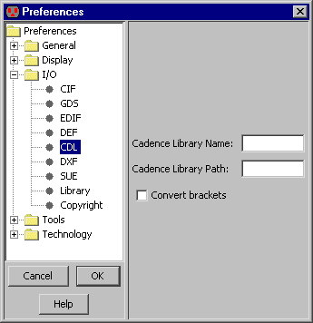

<!-- NEED 5in -->

<!-- HEADER 7-3-6: CDL Control -->

<!-- PREFERENCE I/O/CDL -->

<TABLE><TR><TD>
CDL (Circuit Description Language) почти инентичен формату Spice,
и используется как способ обмена нетлистами.
Опции CDL управляются с панели "CDL"
(меню <B>File / Preferences...</B>, раздел "I/O", панель "CDL").
<P>
Это диалоговое окно управляет именем записывамой библиотеки и информацией о пути к записываемому файлу, и позволяет управлять преобразованием квадратных скобок.
</TD><TD><CENTER></CENTER></TD></TR></TABLE>

<!-- TRAILER -->
